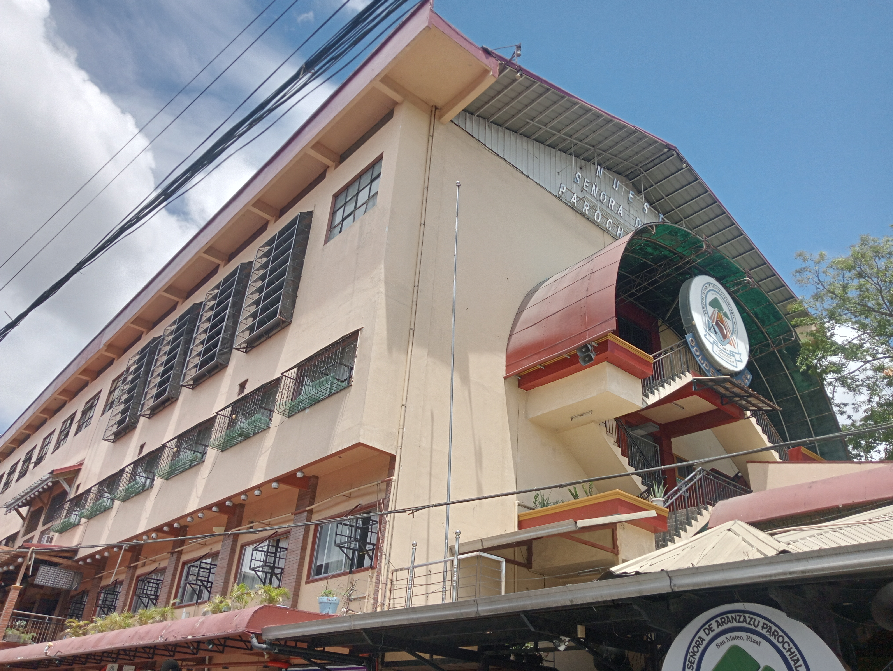

NSDAPS caters to the quality educational needs of the middle to the lower income Roman Catholic Church as an instrument for the continuing process of evangelization and sharing in the vision of the Diocese of Antipolo in being “a community of disciples of the Risen Christ”. The formation being given to the students includes not only academic proficiency, but more importantly Catholic doctrines, Gospel values for the Filipino Catholic way of life. NSDAPS aims to strengthen, enrich and live the faith in Christ with Mary, Our Lady of Aranzazu, to develop academic excellence and servant leadership among Aranzan learners to become globally competitive in facing challenges of the 21st century, to uplift institutional standards by empowering personnel to offer quality services, to rekindle the family spirit by reuniting the greater Aranzan community and to enhance and sustain strong partnerships with stake-holders and related sectors to support relevant school programs and services.